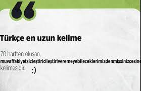

Dünyanin en uzun kelimesi Türkçe bir sözcüktür. Muvaffakiyetsizleştiricileştiriveremeyebileceklerimizdenmişsinizcesine. Toplam 70 harften oluşan kelime başari anlamina gelen muvaffakiyet sözcüğüne getirilen birçok ekle oluşturulmuştur